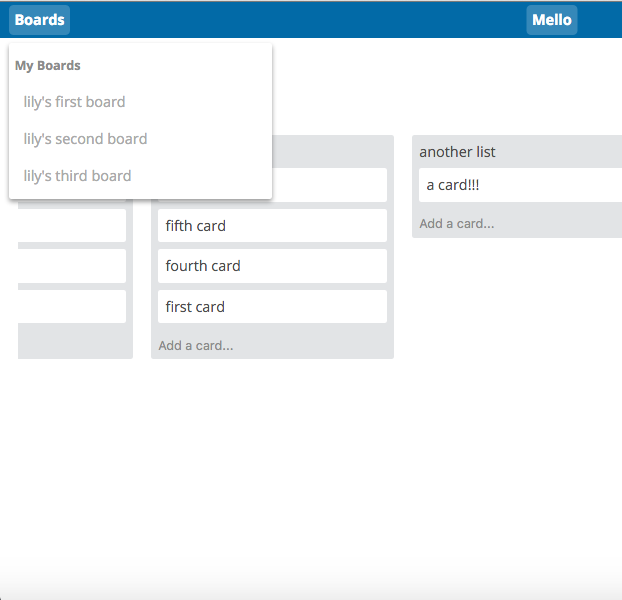

A LITTLE ABOUT ME
As a left-brain/right-brain hybrid (think mathlete/theatre kid), I never thought I'd find a field that challenged me technically and creatively. I grew up dreading the day when I'd need to give up one of my passions. Luckily, I discovered programming, and fell in love with its perfect balance of logic and creativity.
I work as a consulting full-stack engineer, building out APIs in Ruby, Python, and Javascript, and creating richly interactive front-ends (mostly in React). I also work with artists and arts organizations to create or overhaul their online presence. More often than not, these sorts of jobs have me working in Wordpress, but I believe in using the right tool for the job, and am always adding new technologies to my skillset.
I'm currently consulting on several software projects, running a theatre company, creating handmade ceramics, and consuming dangerous quantities of iced coffee to make it all possible. In a past life, I taught Full-Stack Web Development at App Academy NYC.
I'm always looking to expand my network and contribute to exciting projects built by awesome people. If you think I'd be a fit for your team, I'd love to meet you!
MY FAVORITE TOOLS
SOME THINGS I'VE MADE
These are all projects I've built for fun – for samples of client work, get it touch!
-
Asteroids (Javascript, HTML5 Canvas, jQuery)
Check it out!
Everyone's favorite arcade classic, coded for the browser.
Randomly generates irregular polygonal asteroid geometry.
Uses trigonometry and transformational geometry to approximate physics and render objects.
Implements the separating axis theorem to ensure accurate collision detection. -
Mello (Rails, React/Flux)
Check it out! A project management tool with intuitive UI built with Rails and React.
React/Flux front-end consumes a JSON API served up by Rails for a seamless single-page user experience.
Uses ReactDnD to achieve fluid drag-and-drop user interactions. -
ActiveRecord Lite (Ruby)
Check it out!
Ruby ORM recreating the core funtionality of Rails' ActiveRecord
Generates SQL queries based on naming conventions to replicate Rails associations.
Utilizes advanced Ruby language features, such as meta-programming and reflection. -
Custom Websites
I am passionate about helping artists and arts organizations create an impactful web presence! Whatever your goal – from refreshing your look, adding e-commerce to an existing website, creating a compelling portfolio – I'd love to work with you. An artist myself, I am the ideal collaborator to fellow artists looking to make a splash online!
GET IN TOUCH!
Feel free to email me at lilykriopelle (at) gmail (dot) com.